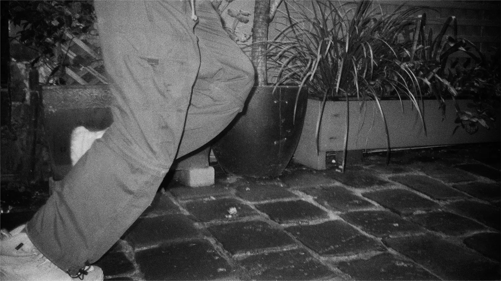

Phoebe Li
: Portfolio
Phoebe Li
: Design
: Photo
: Motion
Info
Type on Types of Type
Waking Moment

Just For Now
Eurostile Specimen
Counterpart
Kusama
The nature of existence is to be unfinished
Caribbean Blue
a tune while you look